リオと ミナの てのひらには、
ほしのたまごと、
いのちのざいりょうたちが のっていました。
ふりかけたのは、プリンセスの シロップ。
のせたのは、サターノの ケーキのかた。
ふわふわ わたがし、コンペイトウ、シナモンパウダー……！
「さあ、つぎは ケーキの いちばん たいせつな ところ。きじ を つくろう！」
くまさんパティシエが にっこり いいました。
星々が紡ぐ、最初の物語
「うちゅうの はじまりと おはなしのたまご」は、 宇宙の誕生を詩的に描いた、子どもから大人まで楽しめる絵本です。 光と音、そして生命がどのように生まれたのか、 壮大なスケールで語られます。
物語を読む
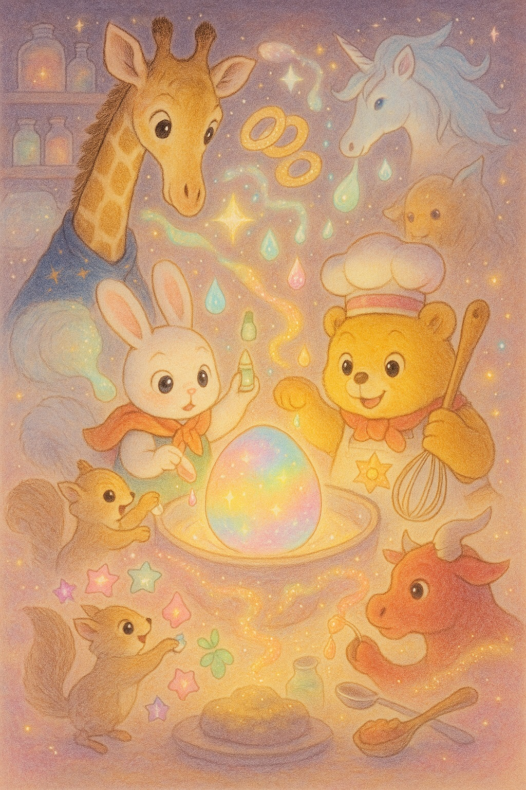
Page 1 – Introduction (Connection with Previous Volume): Wide-angle view, slightly top-down. Giraffe Rio and rabbit Mina hold a glowing “star egg” and magical ingredients in their hands. The warm bear pâtissier stands behind them, smiling kindly. Fluffy cotton candy, colorful sugar crystals, and cinnamon powder swirl gently. Pastel tones with soft morning light fill the kitchen-like celestial background. Style: Pastel tones, morning light palette, picture book style, warm soft curves.
「きじは ケーキの はこ。
ぜんぶの あじを うけとめて、
やさしく つつむ おさらみたいなものなんだ」
そして――
その きじこそ、**地球（ちきゅう）**！
ぜんぶの あじを うけとめて、
やさしく つつむ おさらみたいなものなんだ」
そして――
その きじこそ、**地球（ちきゅう）**！
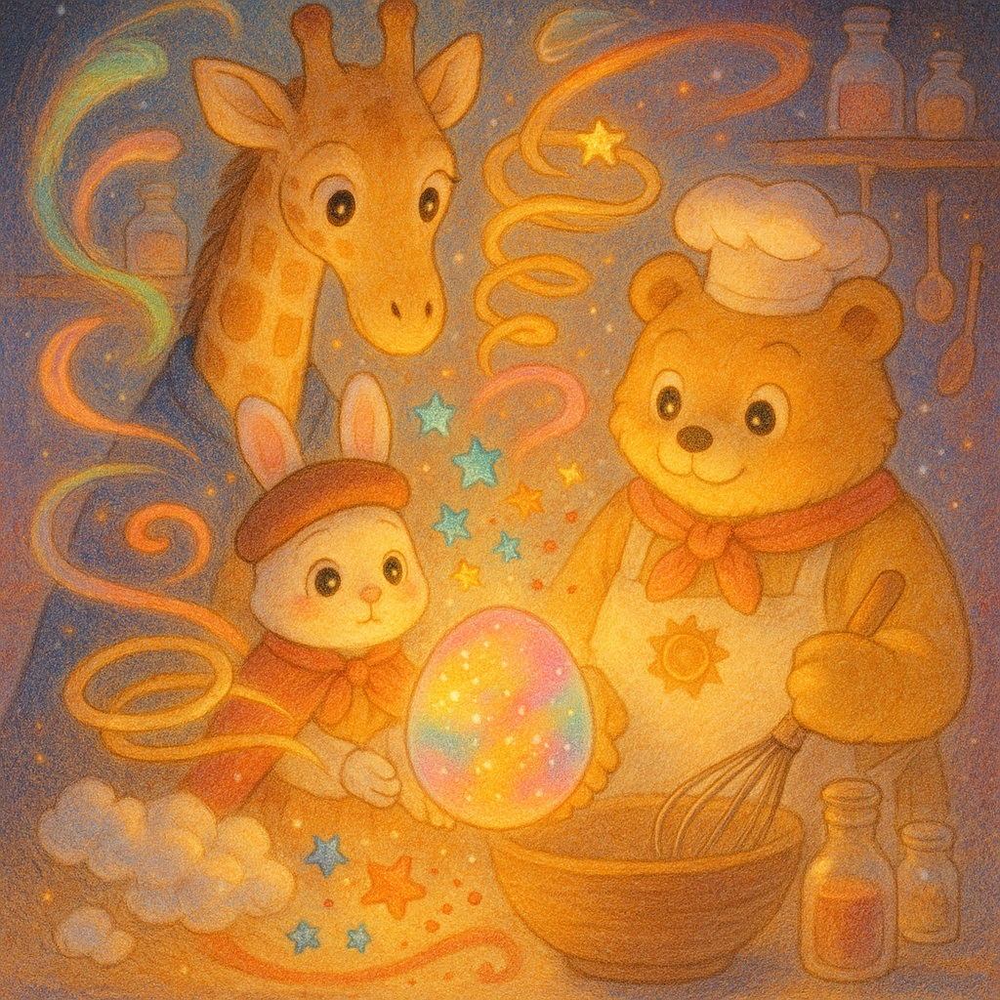
Page 2 – What Is the Cake Base?: Frontal medium shot, like a stage scene. The bear pâtissier explains while floating Earth appears between his paws like a round sponge cake base. Rio and Mina sit on either side, listening with big eyes. The atmosphere is like a soft sunrise over a magical kitchen. Style: Pastel tones, morning light palette, picture book style, warm soft curves.
ふわふわしてて、
あたたかくて、
すこし つめたくて、
みずも たっぷり ふくんでる――
それが、地球のきじ。
あたたかくて、
すこし つめたくて、
みずも たっぷり ふくんでる――
それが、地球のきじ。
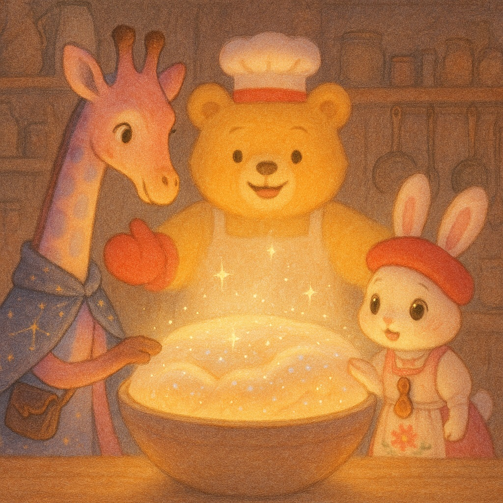
Page 3 – Texture of the Cake Base: Close-up, cross-section style of the Earth cake base. Show fluffy layers, glistening water droplets, warmth and slight coolness through soft visual textures. Rio and Mina gently press a paw or hoof to the surface. The background fades into soft pastel clouds. Style: Pastel tones, morning light palette, picture book style, warm soft curves.
「地球の きじには、いろんな ものが まざってるよ」
ふくろうの オリオが おしえてくれました。
くさの たね、
うみの しお、
ちいさな いしころ、
おひさまの ひかり、
やまの つち、
ふるい いんせきの かけら――
ふくろうの オリオが おしえてくれました。
くさの たね、
うみの しお、
ちいさな いしころ、
おひさまの ひかり、
やまの つち、
ふるい いんせきの かけら――
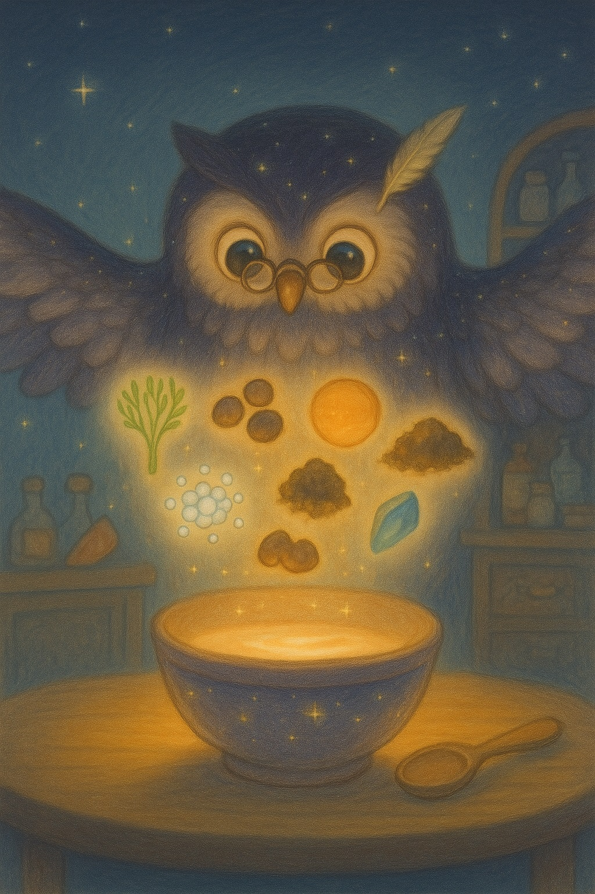
Page 4 – Ingredients of the Cake Base: Flat lay view (bird’s-eye view). Owl Orio spreads his wings as six types of ingredients float gently above the cake batter: grass seeds, ocean salt, pebbles, sunlight, mountain soil, meteor fragments. Each glows faintly. The kitchen table is softly lit, like morning fog. Style: Pastel tones, morning light palette, picture book style, warm soft curves.
それらが ぐるぐる まざって、
ゆっくり まとまって……
いのちの はじまり が
うまれてくるのです。
ゆっくり まとまって……
いのちの はじまり が
うまれてくるのです。
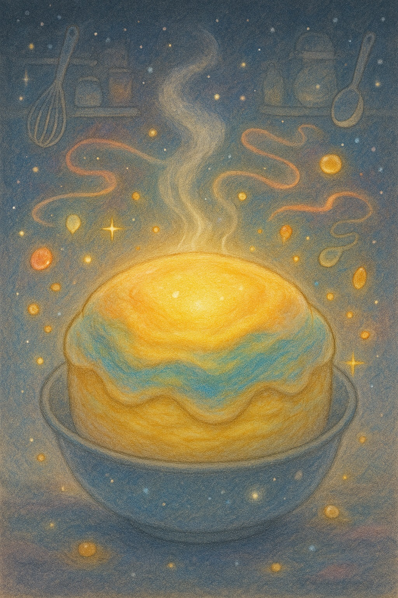
Page 5 – Mixing Begins: Dynamic swirl composition, wide view. Ingredients mix in a spiraling motion in the center of the image, forming a pastel-colored doughy sphere. A small green sprout glows faintly at the core. Rio and Mina watch in awe from the side, their silhouettes glowing. Style: Pastel tones, morning light palette, picture book style, warm soft curves.
くまさんは、できた きじを
そっと オーブンに いれました。
「ここから じっくり やいていくよ。
おいしい いのちが うまれるまで、ちょっと じかんが かかるんだ」
そっと オーブンに いれました。
「ここから じっくり やいていくよ。
おいしい いのちが うまれるまで、ちょっと じかんが かかるんだ」
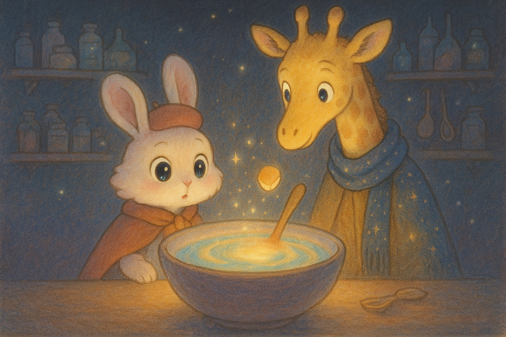
Page 6 – Into the Oven: Medium shot from side angle. The bear pâtissier gently places the glowing cake base into a round, pastel oven shaped like a sun. Warm light spills out. Rio and Mina peek inside with anticipation. The scene feels cozy, like baking on a spring morning. Style: Pastel tones, morning light palette, picture book style, warm soft curves.
「この きじ、うごいてるみたい…」
ミナが ささやきました。
「うん、まるで いのちが はじまる よかんが する！」
リオも うなずきます。
ミナが ささやきました。
「うん、まるで いのちが はじまる よかんが する！」
リオも うなずきます。
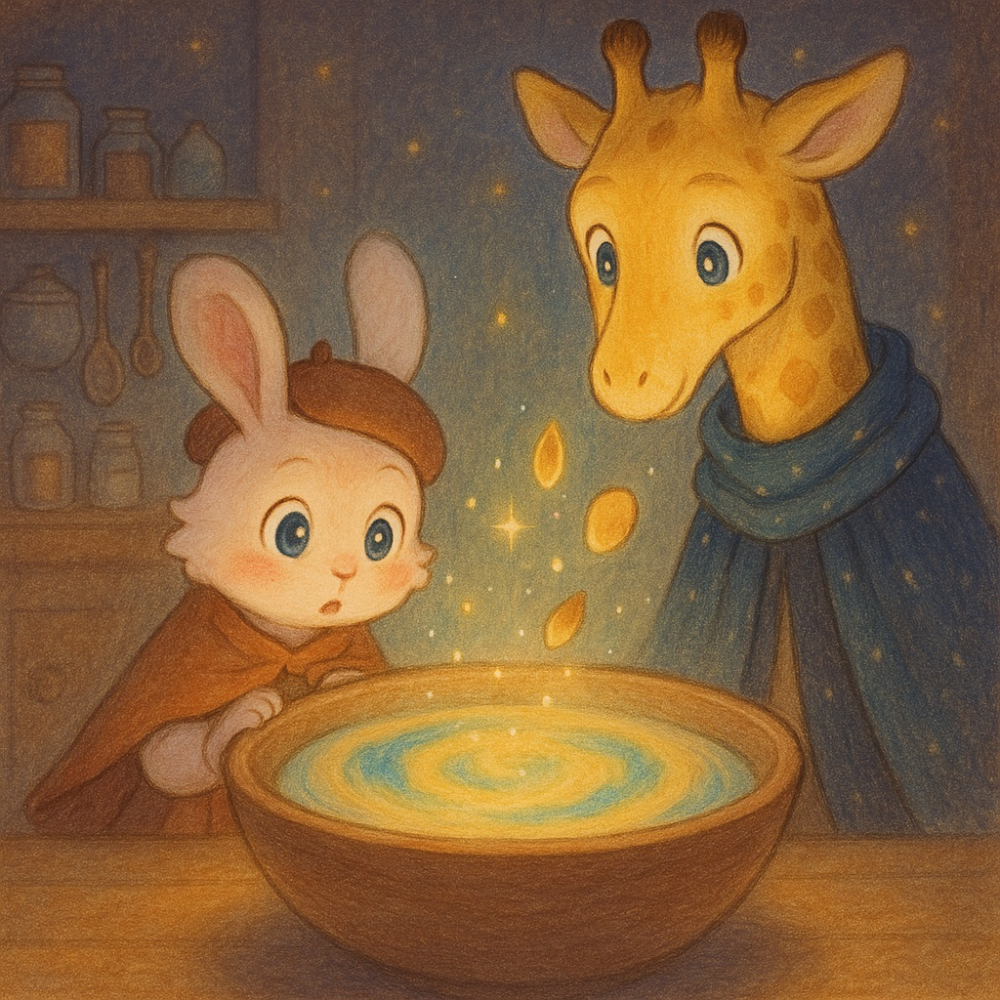
Page 7 – The Living Cake Base: Close-up from inside the oven (slightly below angle). The cake base seems to move—bubbling and pulsing gently. Misty pastel steam floats up. Mina whispers, and Rio looks amazed. The colors are muted and magical, like a soft dream forming. Style: Pastel tones, morning light palette, picture book style, warm soft curves.
ビューン！
どこからか とんできた 大きな かたまりが――
ドカーン！
「たいへん！ きじが やぶれちゃった！？」
でも、ぽーんと とびちった かけらが、
くるくる まわりはじめました。
それが――**お月さま**！
どこからか とんできた 大きな かたまりが――
ドカーン！
「たいへん！ きじが やぶれちゃった！？」
でも、ぽーんと とびちった かけらが、
くるくる まわりはじめました。
それが――**お月さま**！
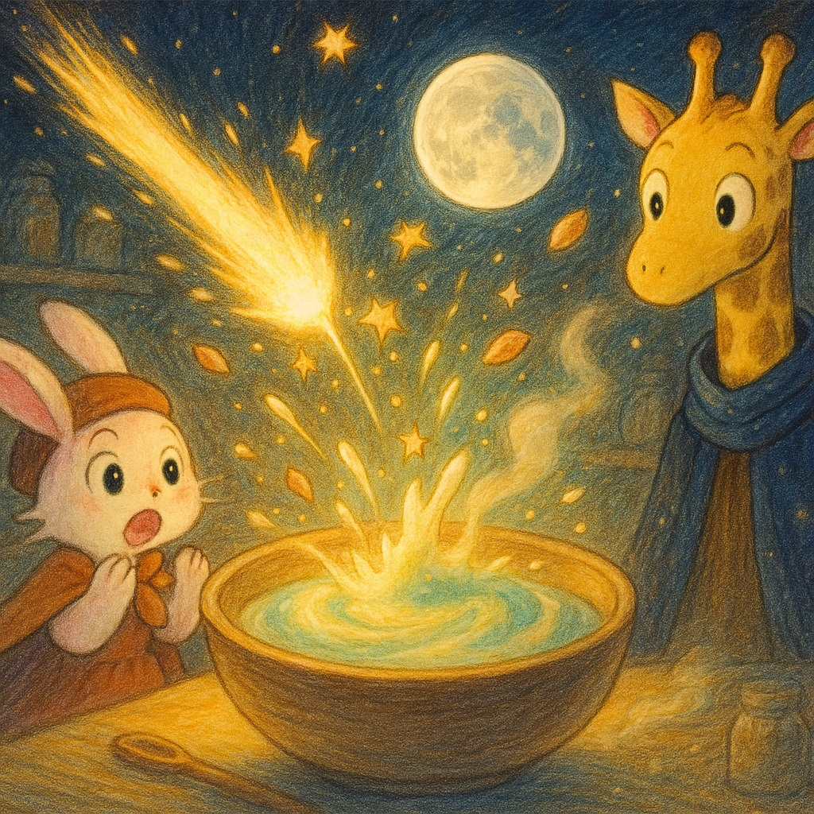
Page 8 – Collision and the Moon’s Birth: Dramatic wide shot. A glowing rock collides with the cake base in a soft explosion of sparkles. A piece flies out and starts spinning gently into a silver moon. Rio and Mina duck in surprise. Show motion with gentle curves and stardust-like trails. Style: Pastel tones, morning light palette, picture book style, warm soft curves.
ちょっぴり いたかったかもしれないけど、
お月さまは 地球の やさしい おともだちに なりました。
夜の あかり、
うみの みちびき、
地球ケーキの リズムを ととのえてくれます。
まるで ケーキの よこに のった
まんまる パイ みたいですね。
お月さまは 地球の やさしい おともだちに なりました。
夜の あかり、
うみの みちびき、
地球ケーキの リズムを ととのえてくれます。
まるで ケーキの よこに のった
まんまる パイ みたいですね。

「うんうん、いい きじだぞ。
ここからは ぼくに まかせてね」
くまさんが にっこり わらいました。
オーブンの なかでは――
あおく ゆれる うみ
みどりの だいち
ふわふわの くも
……が すこしずつ あらわれてきました。
ここからは ぼくに まかせてね」
くまさんが にっこり わらいました。
オーブンの なかでは――
あおく ゆれる うみ
みどりの だいち
ふわふわの くも
……が すこしずつ あらわれてきました。
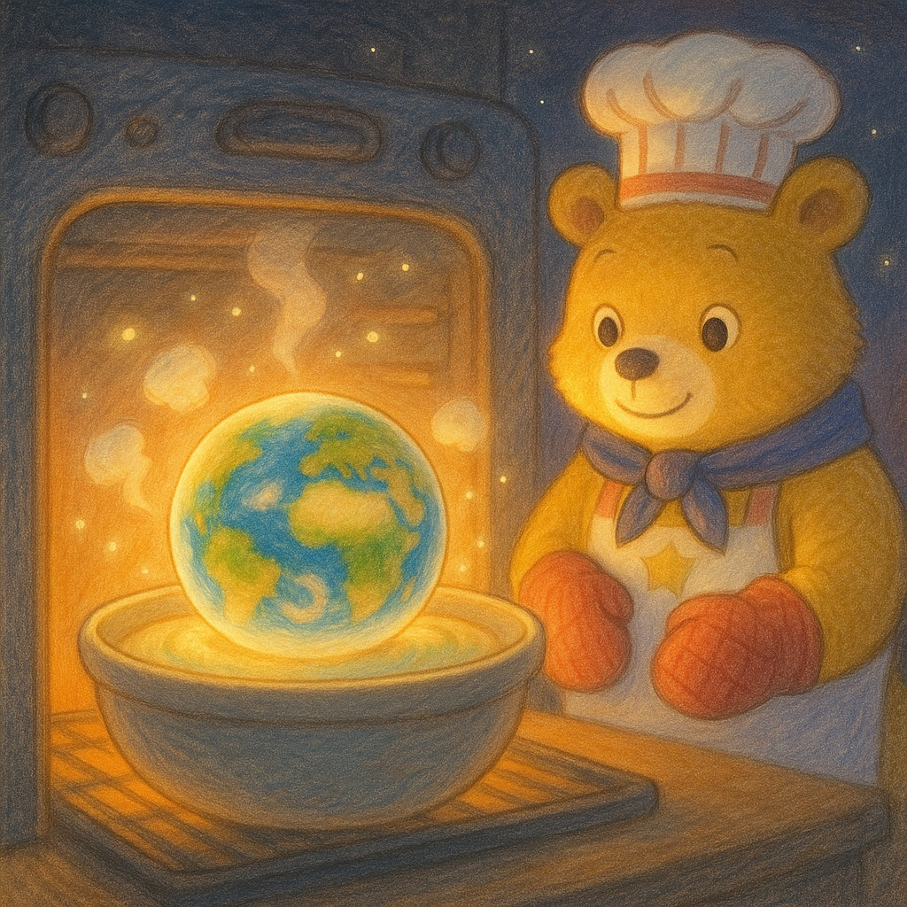
Page 10 – Earth Cake Baking Complete: Oven door open, wide frontal view. Earth cake is fully baked, with shimmering oceans, forests, and soft clouds visible. The bear smiles with pride, holding a wooden spoon. Rio and Mina cheer. A magical baking room glowing with golden morning light. Style: Pastel tones, morning light palette, picture book style, warm soft curves.
そして――
インフレトンくじらが はこんできた、あの たまご。
ケーキの なかで、そっと めを さまします。
ぷくぷく、ちいさな あわ
くねくね、うごく もの
きらきら、ひかる つぶ――
それが、**「いのち」**の はじまり！
インフレトンくじらが はこんできた、あの たまご。
ケーキの なかで、そっと めを さまします。
ぷくぷく、ちいさな あわ
くねくね、うごく もの
きらきら、ひかる つぶ――
それが、**「いのち」**の はじまり！
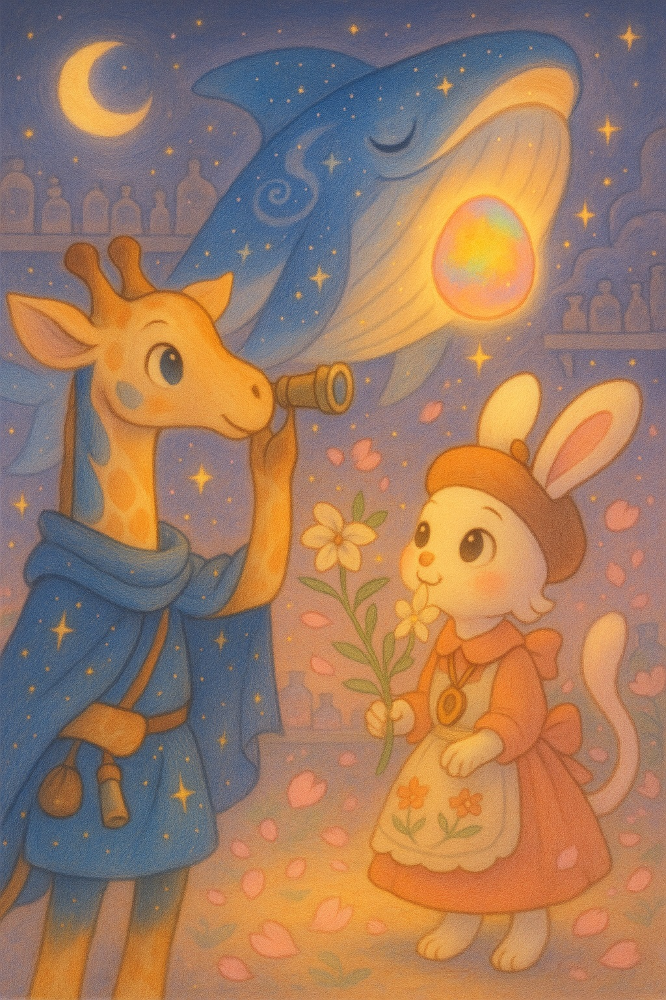
Page 11 – Birth of Life: Underwater side-view inside the cake. The star egg from the whale Infreton glows as tiny bubbles, sparkling bits, and squiggling life-forms appear. Gentle movement and twinkle everywhere. A peaceful, enchanted feeling like first breath. Style: Pastel tones, morning light palette, picture book style, warm soft curves.
ちいさくて、やわらかくて、
でも うちゅうで いちばん まぶしい ひかり。
これから どんな せかいが できあがるのか――
リオと ミナの ワクワクは、まだまだ つづきます！
でも うちゅうで いちばん まぶしい ひかり。
これから どんな せかいが できあがるのか――
リオと ミナの ワクワクは、まだまだ つづきます！
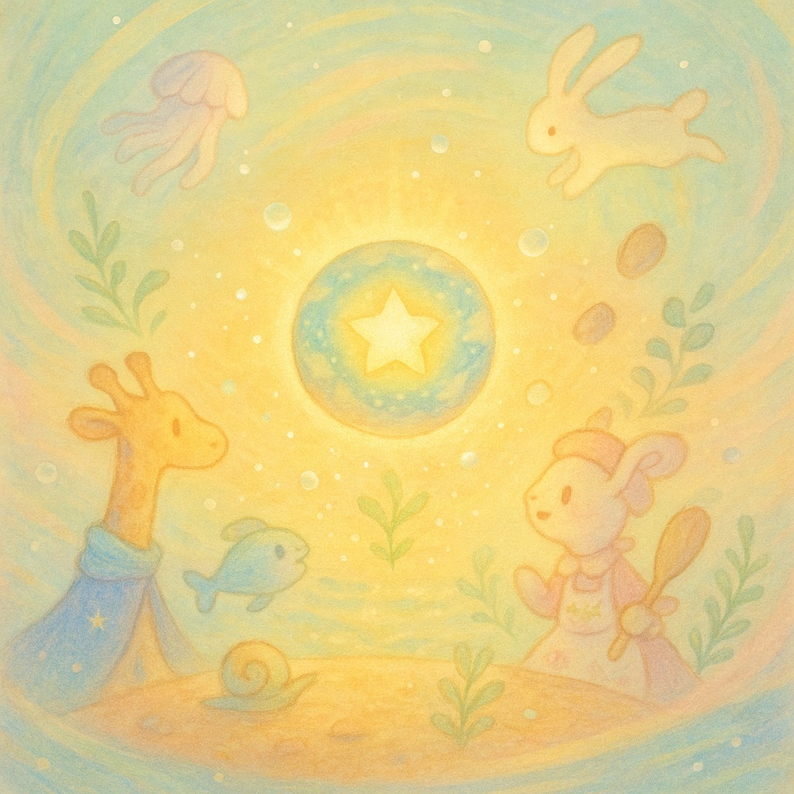
Page 12 – Looking Ahead: Wide view, looking up toward a glowing future sky. Rio and Mina gaze into the cake’s center, where a small glowing life form floats like a star. Soft lights and misty curves rise upward, hinting at a new world. Excitement and calm anticipation. Style: Pastel tones, morning light palette, picture book style, warm soft curves.
この本について

この本は、宇宙の壮大な物語を優しく、そして神秘的に描いた作品です。 幼い頃から星空を眺めることが好きだった著者が、 「もし宇宙の始まりが、大きなキッチンでのお料理だったら？」という 想像から生まれました。
光も時間もなかった「無」の空間から、 どのようにして星々が生まれ、生命が芽吹いていったのか。 科学的な視点と、あたたかい物語の視点が融合した、 唯一無二の宇宙絵本です。